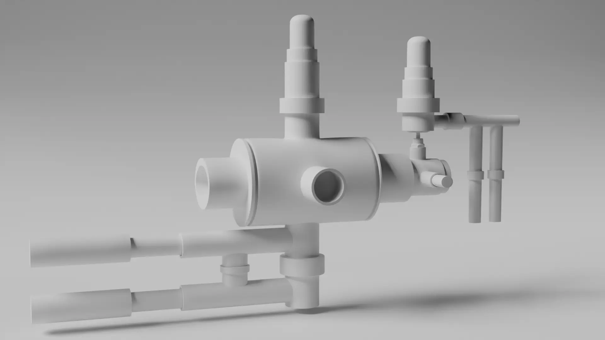
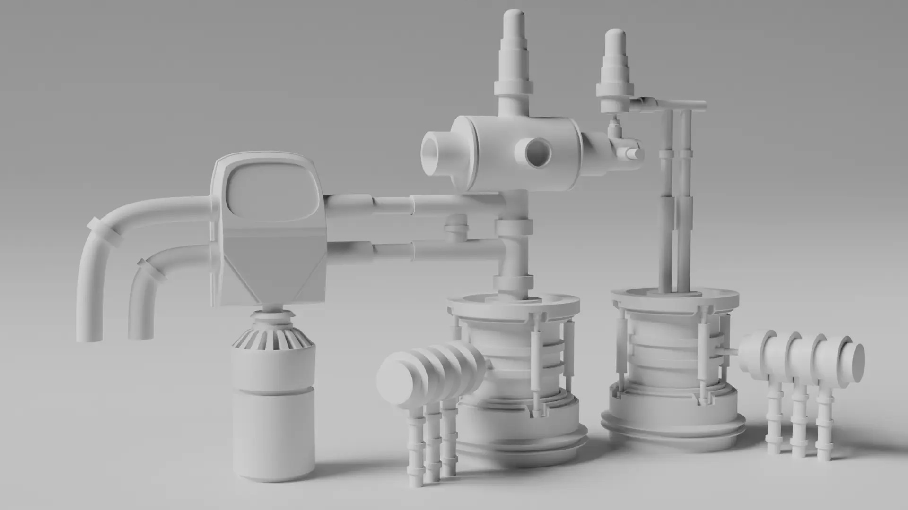
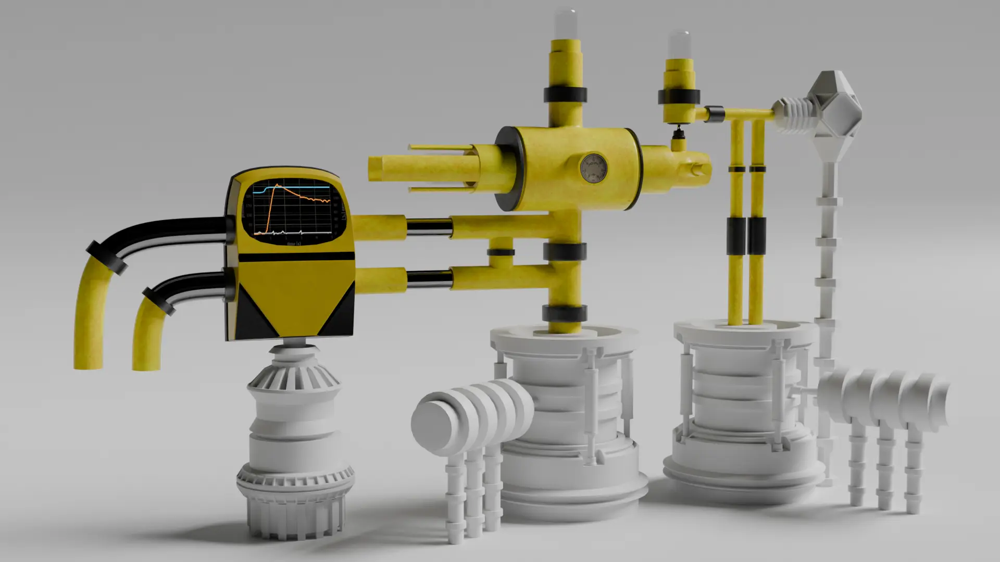
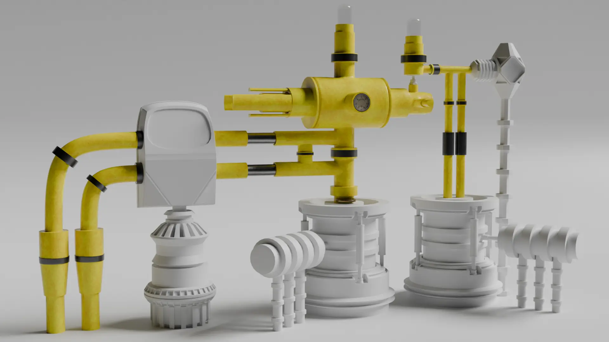
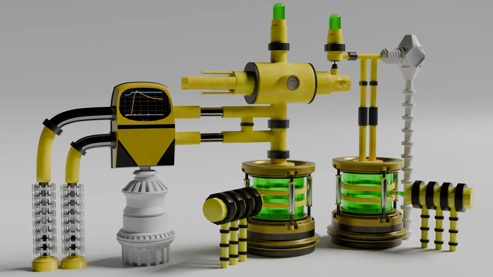
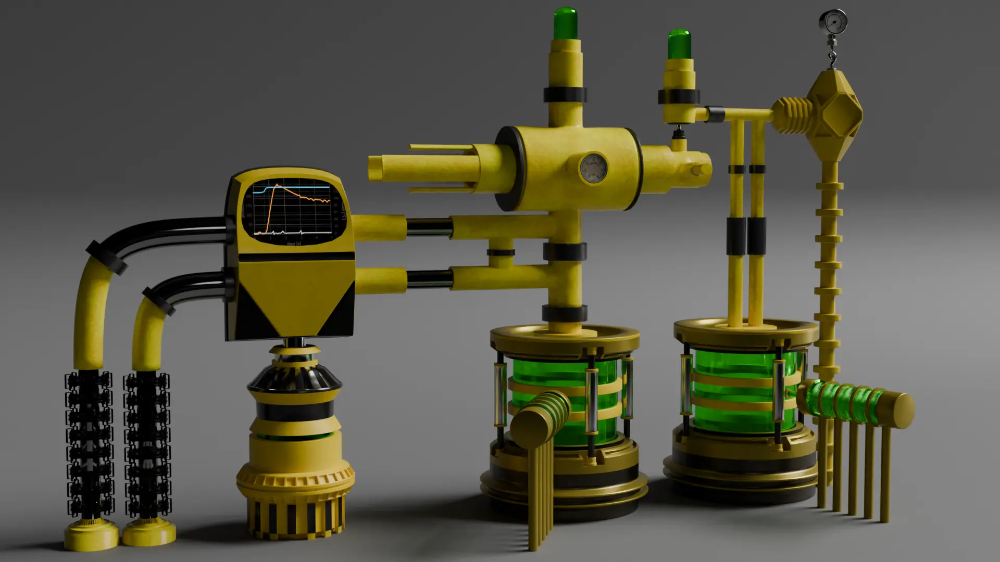
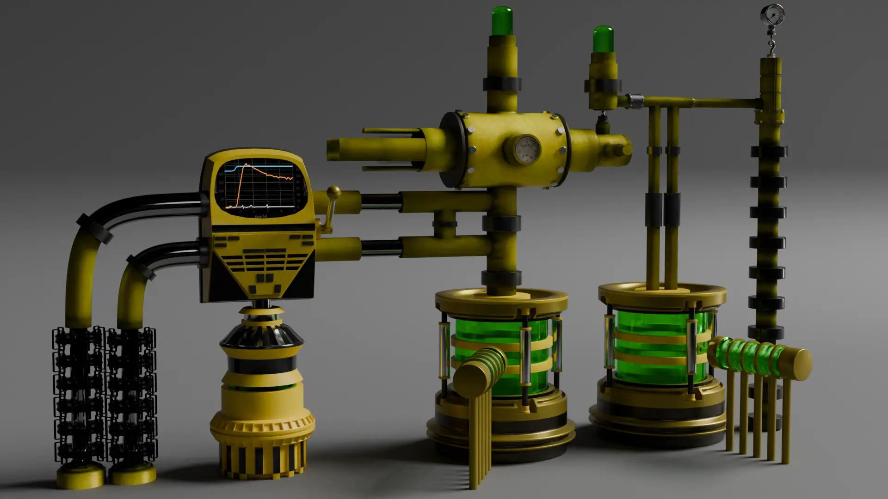
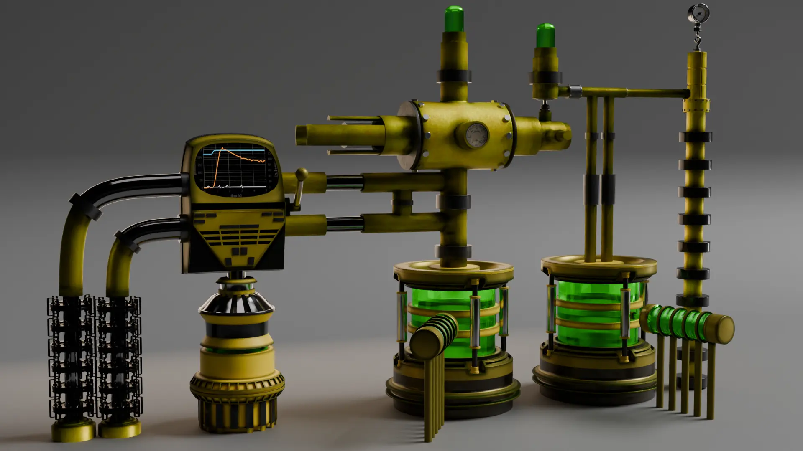

Introduction
This project was a focused exercise where I wanted to improve my topology workflow and figure out how to distribute detailing across a hard surface model. The idea was a retro futuristic looking greenish reactor fluid holder type pipe system with a screen and an analog looking control panel.
The screen is just a temp-pressure curve image I got from the internet. Nothing fancy but it sells the look. This was also the project where I started learning more about bevel masks and material layering which was a big step for me.
Concept Phase
I put together a concept board to establish the visual direction. I wanted something industrial but futuristic with clean hard edges and exposed piping.

Early Blockouts
The first few renders show the initial blockout. I started with simple cylindrical forms and basic junctions to test how the pipes would interconnect. At this stage it was all about proportion and spacing.




Renders 1 through 4 show the progression from basic cylinders to a more structured system. I experimented with different branching angles and connection points to find a rhythm that felt right.
Detail Pass
Once the base layout was solid I moved into the detail phase. This is where the bevel masks and material layering came in. I started playing with different material blends to separate the pipe sections from the joints and the control panel area.



This was the most time consuming part. Getting the bevels right across curved surfaces while keeping the mesh clean took a lot of back and forth. But learning bevel masks during this project was a game changer for my hard surface workflow.
Final Render
The final render brings the whole system together. The greenish reactor pipes, the analog control panel with the screen graphic, and the material layers all reading the way I wanted. Compared to where I started this project gave me a much better understanding of how to layer materials and use bevel masks effectively.
